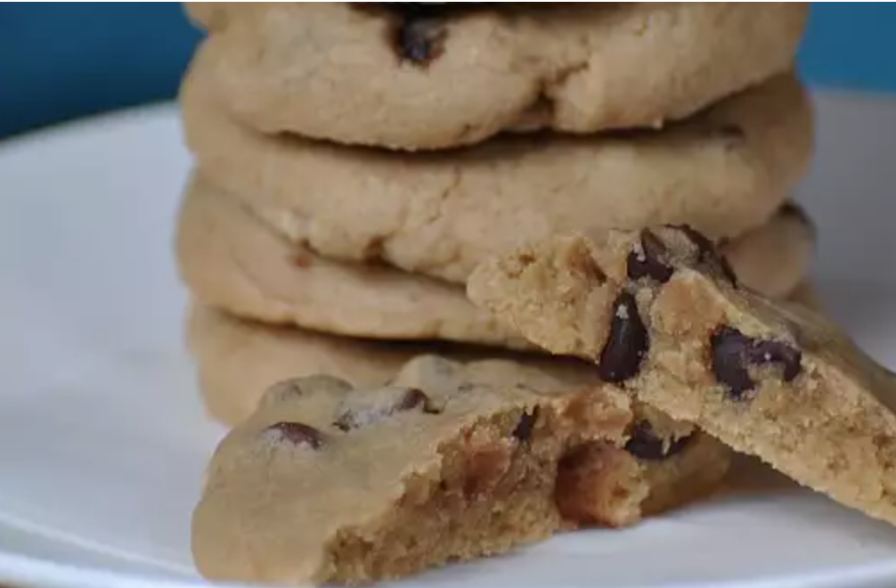

Five-Ingredient Chocolate Chip Cookies

This is a really basic recipe that only uses 5 ingredients. Enjoy!
Cook: 10 mins
Total: 20 mins
Prep: 10 mins
Servings: 24
Yield: 2 dozen cookies
Ingredients:
- 3 cups all-purpose flour
- ¾ cup brown sugar
- 2 eggs
- 1 cup butter, softened
- 1 cup semi-sweet chocolate chips
Steps:
- Preheat oven to 350 degrees F (175 degrees C).
- Sift flour and brown sugar into a bowl; stir in eggs. Mix butter into flour mixture until dough is creamy; fold in chocolate chips. Spoon dough onto a baking sheet, keeping them about 3 inches apart.
- Bake in the preheated oven until slightly brown, 10 to 15 minutes. Cool.